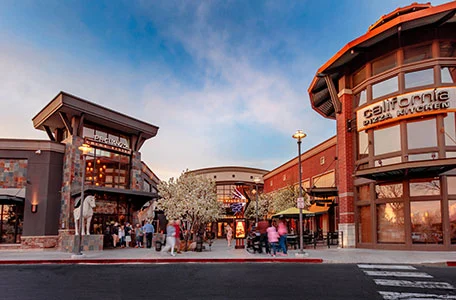
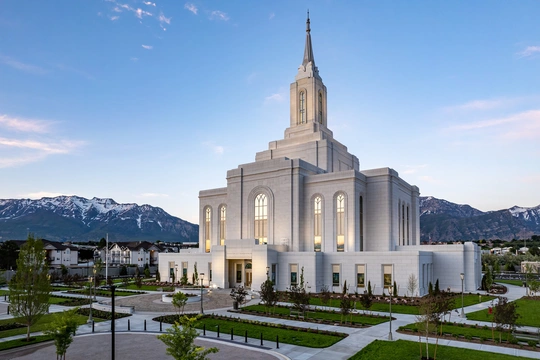
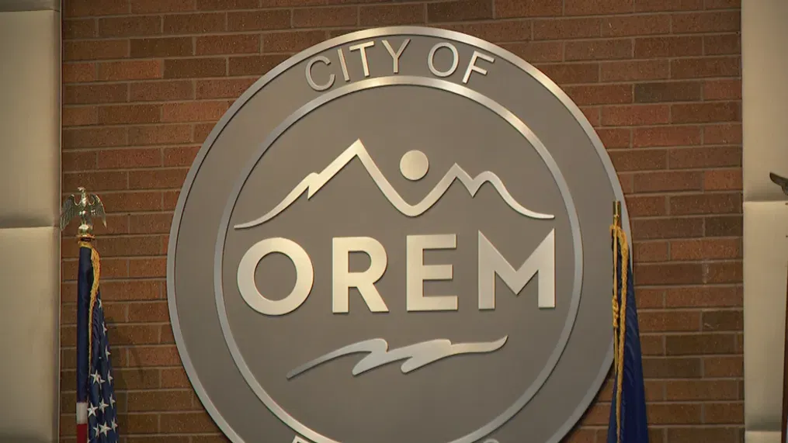
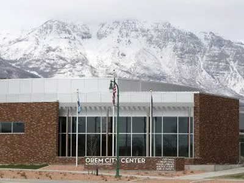

Orem is known as 'Family City USA,' and as of the census of 2022, Orem has a population of 95,910,
with 34.9% of that being people under 18 years of age. Another significant demographic in the city is the female demographic,
as Orem has a 49.2% female population.
This is evident as Orem has over 200 women-owned and operated businesses.
Events
There will be a marathon later in the year during the summer more information will be provided on a later date.
One of Orems Main Attractions is the classic Scera center of the arts that has been opened since
1933 during the great depression this location brought up morale to the city of Orem and still host
various artistic shows and plays movies to this day. You can click on the "Attractions" link to visit there website!
The Scera Art Center

City Center Mall the biggest mall in the county

The new Orem Temple

Orems City logoA view of Mount Timpanogos from Orem

Orems City Council